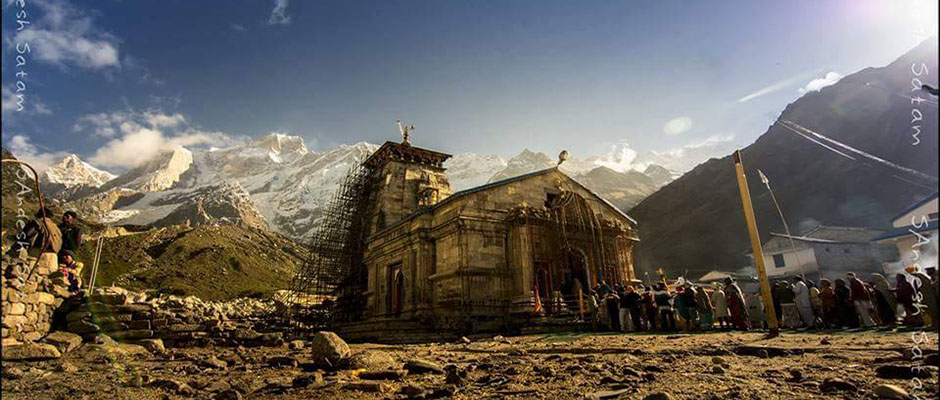
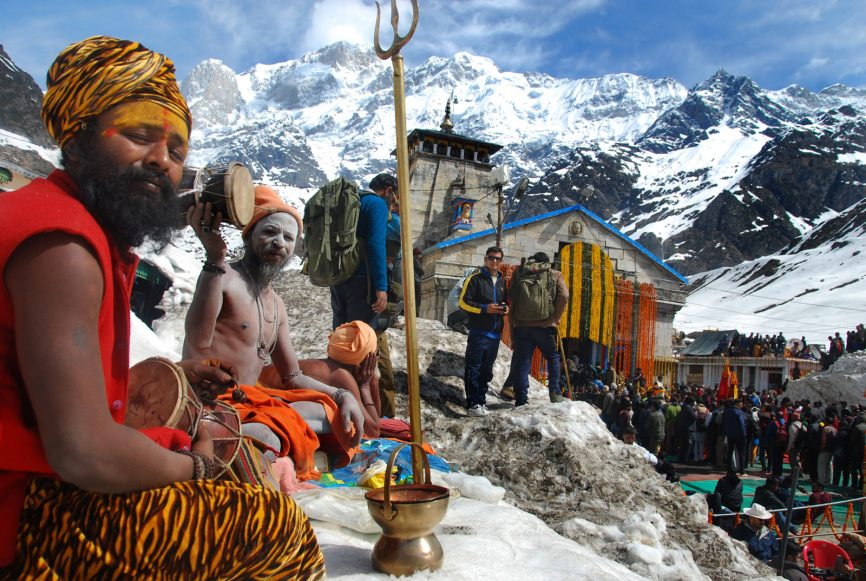
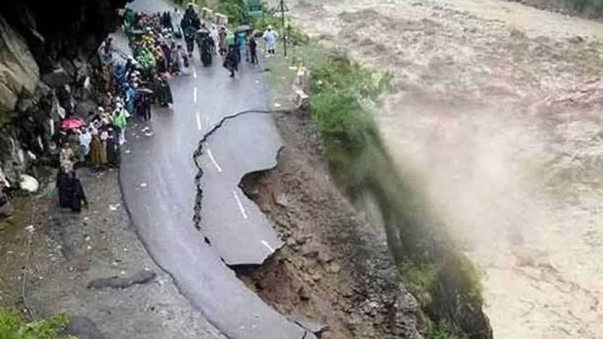

Kedarnath is famous shrine for Lord Shiva devotees. As per mythology and legends, there are various stories associated with Kedarnath Temple. Legend 1: Legend goes that Nara and Narayana - two incarnations of Vishnu performed severe penance in Badrikashraya of Bharat Khand, in front of a Shivalingam fashioned out of earth. Pleased with their devotion, Lord Shiva appeared in front of them and said that they may ask for a boon. Nar and Narayan requested Shiva to take up a permanent abode as a Jyotirlingam at Kedarnath so that all people who worship Shiva shall be freed from their miseries.
' Geologists claim that the temple of Kedarnath was under snow for nearly 400 years, some time around 1300-1900 AD, a period known as the Little Ice Age. Scientists from the Wadia Institute of Himalayan Geology, Dehradun, say the several yellow lines on the temple walls point to glacial activity in the region. The temple not only survived being under the snow for 400 years but also escaped any serious damage from glacial movement, as per this report. Scientists say that even the inside of the temple shows signs of glacial movement and the stones are more polished. The report further adds that scientists studied the architecture and concluded that the those who designed the temple not only kept in mind the terrain but also the formation of snow and glaciers, and ensured that the structure was strong enough not only to withstand natural disasters and the passage of time.
In 2013, massive flash floods swept through Uttarakhand. The deluge claimed 197 lives. About 236 were injured and 4,021 went missing. A total of 2,119 house were fully damaged, 3,001 severely damaged and 11,759 partially damaged, according to reports. In 2013, massive flash floods swept through Uttarakhand. The deluge claimed 197 lives. About 236 were injured and 4,021 went missing. A total of 2,119 house were fully damaged, 3,001 severely damaged and 11,759 partially damaged, according to reports.
A pilgrimage to Kedarnath in June, 2013, turned out to be the last trip for thousands of people. One of the most devastating disasters of this decade left the world stunned and buried in immeasurable grief. Director Abhishek Kapoor (Rock On, Kai Po Che) chooses this historic catastrophe as the background of his latest film Kedarnath, and immediately faces the most obvious challenge—how to believably recreate the natural calamity in its entirety?
Featuring Sushant Singh Rajput and newcomer Sara Ali Khan in lead roles, it tells an inter-faith love story between a wealthy Hindu Brahmin girl whose family owns a lodge and shops near the historic Kedarnath Temple in the Uttarakhand mountains and a humble Muslim boy who is a 'pithoo' (porter) working in the same vicinity. As their relationship grows closer, the pair face many obstacles, including familial disapproval and contrasting backgrounds; when the sudden rains of the 2013 Uttarakhand floods devastate the region, the couple are forced to survive against the elements and face the ultimate test of their love.